- 01. What is Laser Cutting?
- 02. Stages of Laser Cutting
- 03. Types & Processes
- 04. Advantages & Limitations
- 05. Lab Safety Protocols
- 06. 1490 Machine Details
- 07. Materials Used
- 08. Selected Design & Image
- 09. Image to DXF Preparation
- 10. RDWorks Nesting & Layers
- 11. Settings & Execution
- 12. Laser Dynamics Calc
- 13. Final Result Showcase
- 14. Problems & Reflection
- 15. Source Files
What is Laser Cutting?
Laser cutting is a manufacturing process that uses a high-powered laser beam to cut, engrave, or shape materials such as wood, acrylic, plastic, paper, and metal.
The laser beam is focused on a specific point of the material, producing intense heat that melts, burns, or vaporizes the material along a programmed path. This allows accurate and complex designs to be created with high precision.
Stages of Laser Cutting
Create the required design using CAD or graphic design software.
Select a suitable material and place it properly on the cutting bed.
Set the laser power, speed, focus, and other required parameters.
Align and focus the laser beam correctly on the material.
Turn on the air-assist and exhaust systems.
Start the machine; the laser follows the programmed path and cuts the material.
Check the cut for accuracy, quality, and completeness.
Remove the finished piece, clean the machine, and switch off the equipment safely.
Types of Laser Cutting & Processes
1. Diode Laser
SemiconductorUses semiconductor diodes and is commonly used for engraving and cutting wood, acrylic, leather, and other thin materials.
2. Fiber Laser
Fiber-Optic MediumUses a fiber-optic medium and is mainly used for precise cutting and engraving of metals such as steel, aluminium, and stainless steel.
3. CO₂ Laser
Carbon Dioxide Gas MixtureUses a carbon dioxide gas mixture and is commonly used for cutting and engraving wood, acrylic, plastic, paper, and other non-metal materials.
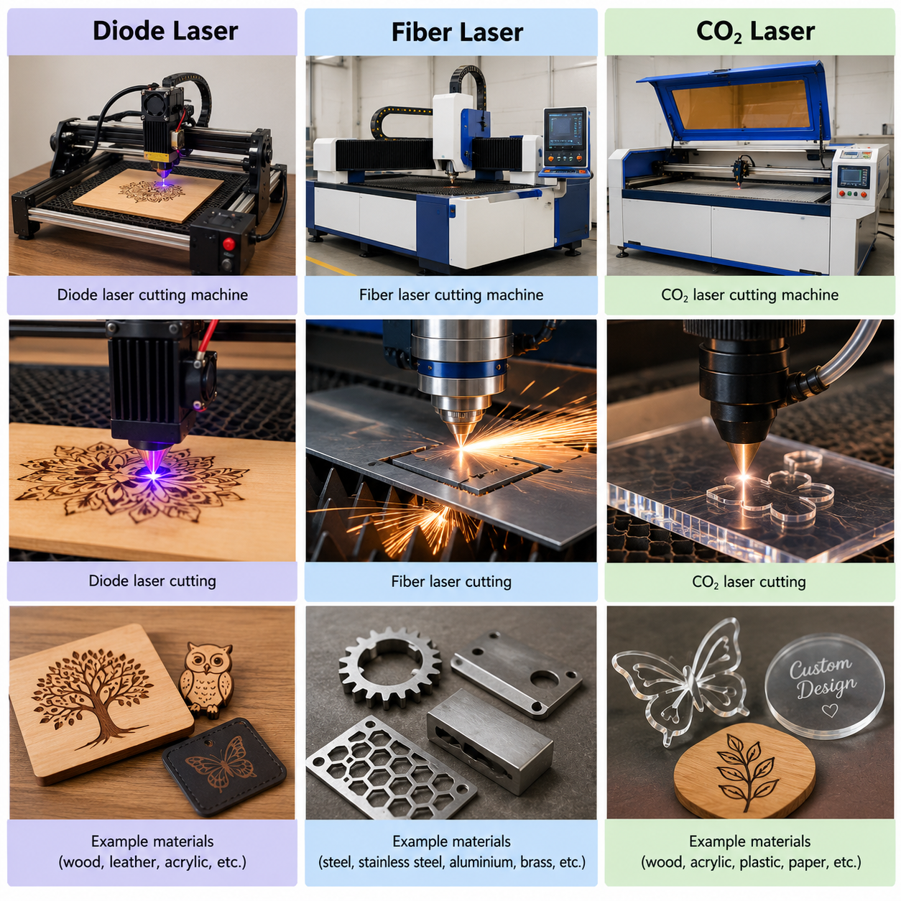
Laser Manufacturing Processes
Cuts materials into required shapes with high accuracy.
Joins two materials by melting them using a focused laser beam.
Produces small and precise holes in materials.
Removes or changes the surface to create designs, text, or patterns.
Creates permanent marks such as numbers, logos, or barcodes on a material.
Modifies the surface properties of a material using laser energy.
Advantages & Limitations
✅ Advantages
- High precision and accuracy.
- Produces clean and smooth cuts.
- Can cut complex shapes and designs.
- Fast and efficient compared to many conventional methods.
- Requires less physical contact with the material.
- Produces less material wastage.
- Easily controlled using CAD/CAM software.
⚠️ Disadvantages & Limitations
- High initial cost of the laser cutting machine.
- Requires skilled operation and proper setup.
- Generates smoke and fumes, requiring an exhaust system.
- Some materials, such as PVC and certain plastics, cannot be safely cut.
- High power consumption for certain applications.
- Maintenance of the laser, optics, chiller, and exhaust system is required.
- Limited material thickness depending on the laser type and power.
- Cutting thick or highly reflective materials can be difficult and slower.
Lab Safety & Safety Rules
- Never look directly at the laser beam.
- Keep the machine cover closed during operation.
- Do not disable safety interlocks.
- Only trained users should operate the machine.
- Switch on the exhaust before cutting.
- Ensure smoke and fumes are properly removed.
- Keep the exhaust duct clean and unobstructed.
- Check the water level before operation.
- Ensure the chiller is switched on and working properly.
- Monitor the temperature and check for water leakage.
- Ensure proper electrical earthing of the machine.
- Check power cables and connections for damage.
- Do not operate the machine with faulty wiring.
- Turn on the air assist during cutting.
- Helps remove smoke and debris from the cutting area.
- Reduces the risk of fire.
- Use only laser-safe and approved materials.
- Keep the cutting bed clean and free from flammable materials.
- Never leave the machine unattended while operating.
- Keep a fire extinguisher nearby and use emergency stop if needed.
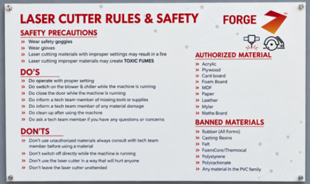
Machine Details & Specifications
The machine used for the activity was a 1490 CO₂ laser cutter at FORGE HW Junction DFab #2.
Model: 1490 CO₂ Laser
📍 Make/Facility: FORGE HW Junction DFab #2 | Software: RDWorks
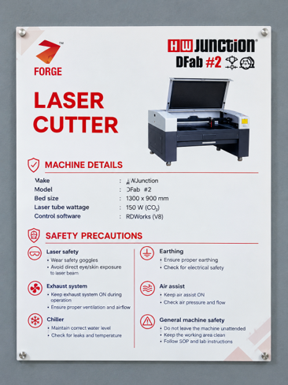
Materials Used
| Parameter | Details |
|---|---|
| Material Type | Acrylic Transparent (Acrylic - 2 Transparent) |
| Thickness | 2.0 mm |
| Source | Fabrication laboratory material |
| Application | Laser cutting/scanning of a phoenix image with text “PRANETHA” and a lion image with wordings “UNSTOPPABLE” |
Selected Design and Image
1. The Mythological Phoenix (Text: "PRANETHA")
"Firstly I selected an image of Phoenix bird from a mythology serving as a magnificent bird which burns in the flames of sun and born a new from its own ashes. I was closely connected with it as it symbolises rising after every failure. Along with the image of the bird I engraved my own name too."
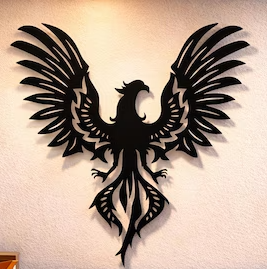
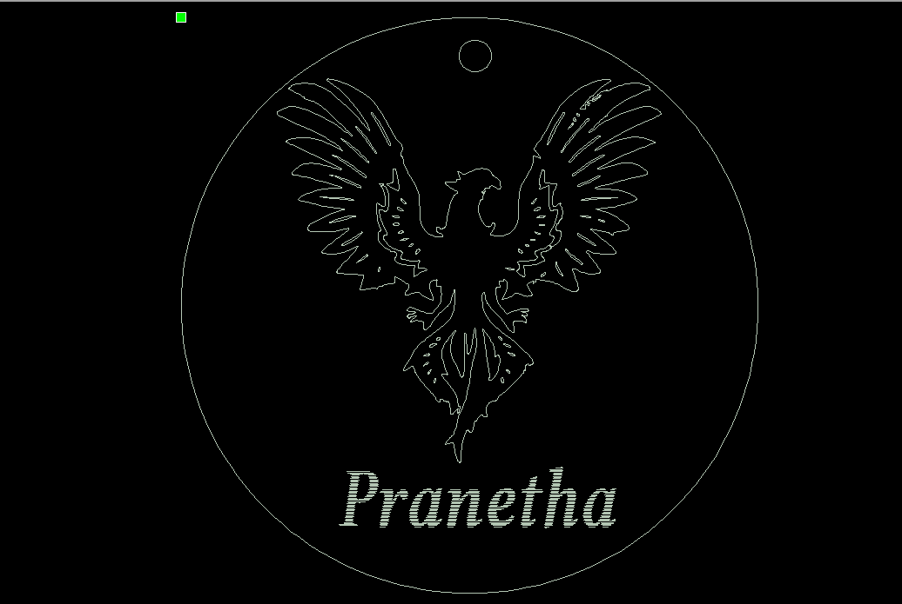

2. The Alpha Lion (Wordings: "UNSTOPPABLE")
"Secondly I selected an image of a lion which symbolises confidence and attitude. Along with the image I engraved the word “Unstoppable”."
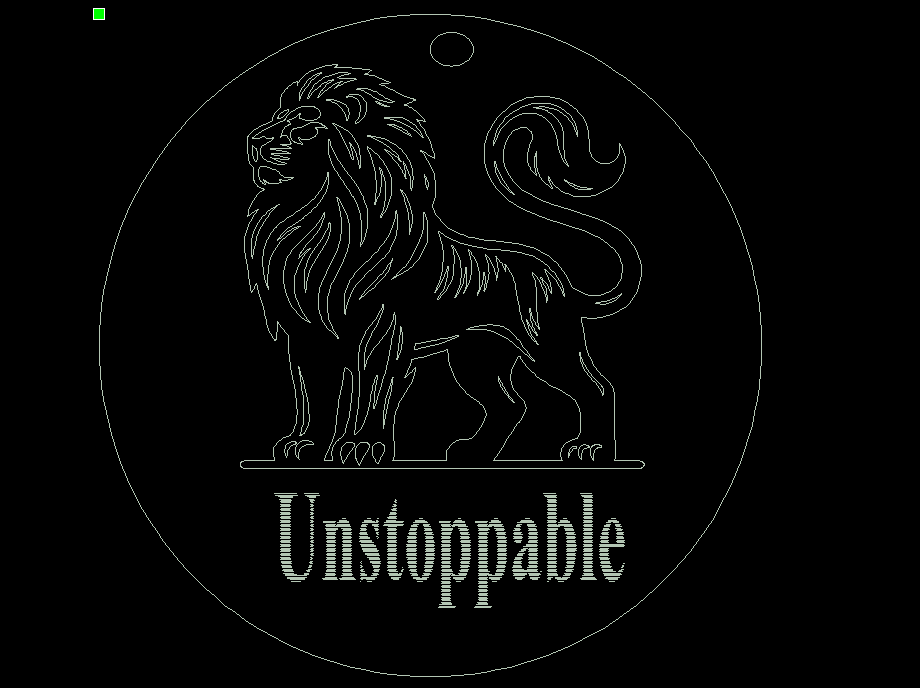
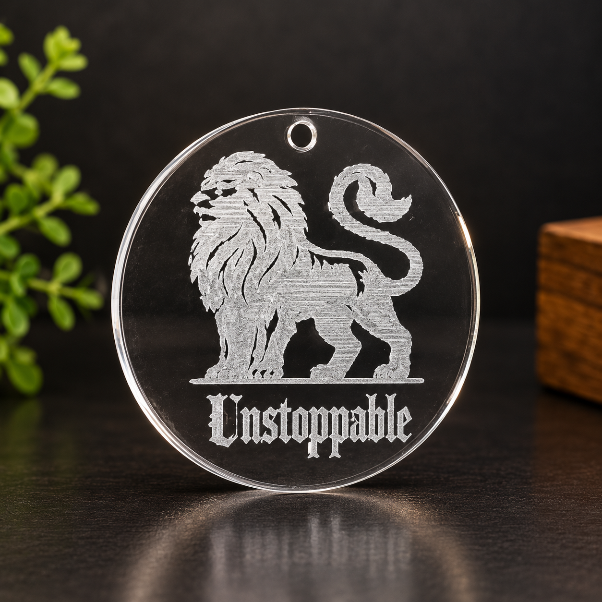
Image to DXF & File Preparation
After conversion, the DXF design was opened in RDWorks and prepared for the laser cutter. The imported geometry was checked before assigning the processing layers. The design was also saved as an AI file for source-file submission.
Software / Tool: Convertio
Important steps & Conversion:
- Select image from Pinterest
- Upload to Convertio
- Select DXF output
- Download DXF
- Open in RDWorks
- Check geometry
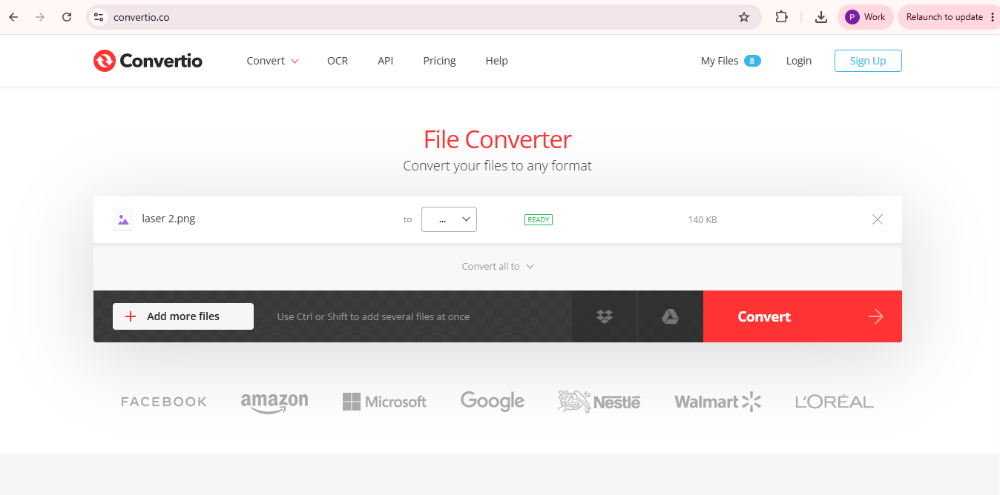
File Preparation Steps:
- Imported the converted DXF into RDWorks.
- Checked the imported phoenix and lion image and text geometry.
- Prepared the geometry (50mm x 50mm) for the required laser operations (vector cleaning, scaling, closed paths).
- Assigned the design to the required RDWorks processing layers.
- Used black for the cutting operation and blue for the scanning/engraving operation.
- Saved the prepared design as an AI file in addition to retaining the DXF source.
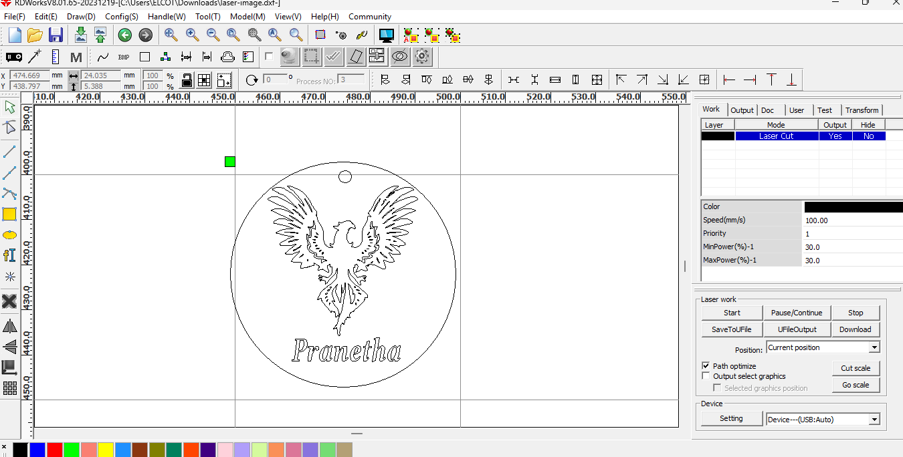
Nesting & Layout in RDWorks
| RDWorks Item | Recorded Information |
|---|---|
| Design Placement | Phoenix positioned above the "Pranetha" text and lion image positioned above “Unstoppable” text |
| Cutting Layer | ⬛ Black Layer (Cut) |
| Scanning / Engraving Layer | 🟦 Blue Layer (Scan) |
| Material Layout | Acrylic - 2, Transparent |
| Previewed Design Size | 50mm × 50mm |
| Previewed Total Time | 0.00.20.048 (20.05s) |
| Previewed Light Time | 0.00.11.139 (11.14s) |

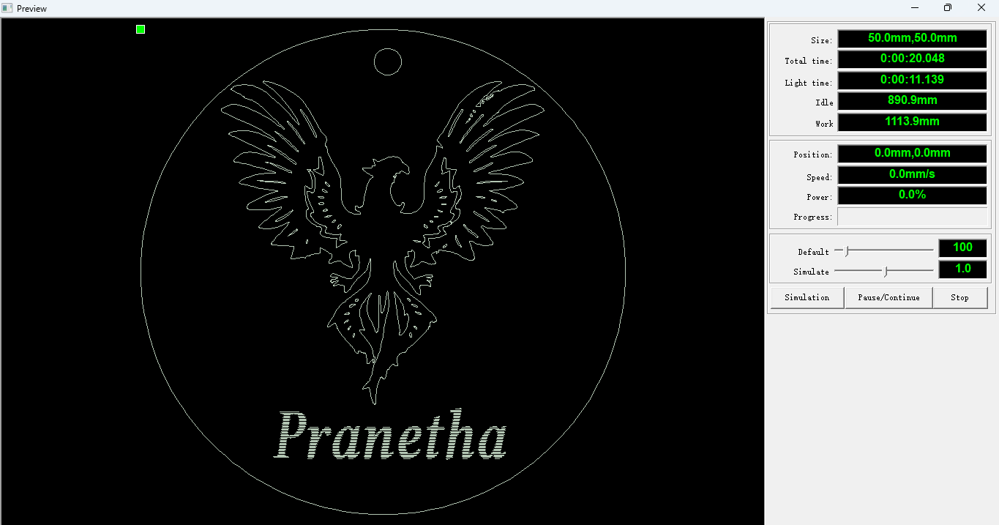
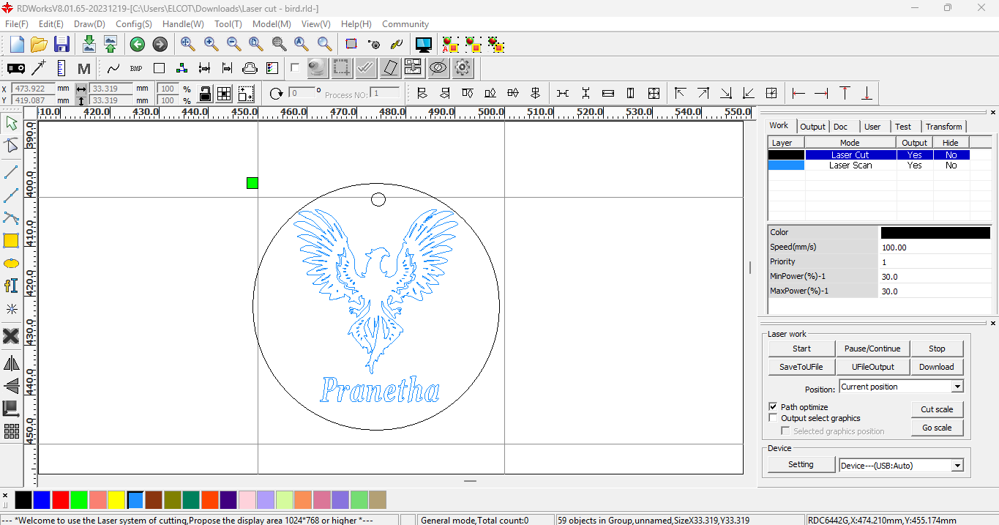
Final Machine Settings & Execution
| Material | Thickness | Operation | Speed | Min Power | Max Power | Passes | Frequency |
|---|---|---|---|---|---|---|---|
| Acrylic - 2 Transparent | 2.0mm |
⬛ Laser Cut | 100 mm/s | 30% | 30% | 1 | 20,000 Hz |
| Acrylic - 2 Transparent | 2.0mm |
🟦 Laser Scan | 100 mm/s | 30% | 30% | 1 | 20,000 Hz |
Cutting Process:
The prepared file was loaded into RDWorks and the laser cutter was operated with the required safety systems active. The transparent acrylic sheet was positioned on the machine bed, the design was processed, and the emblems and text were produced.
- Position acrylic sheet on cutting bed
- Load design in RDWorks
- Verify position & layers
- Check safety systems (exhaust, chiller, air assist)
- Run operation
- Inspect & remove finished piece
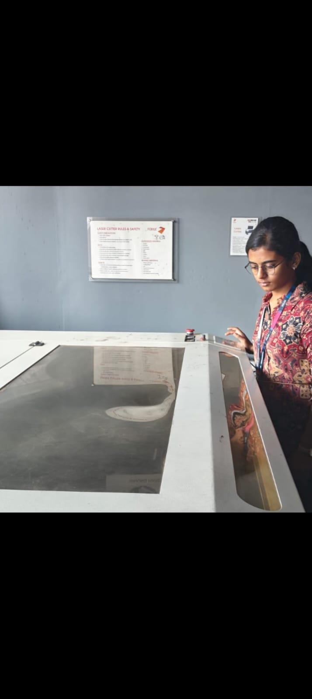
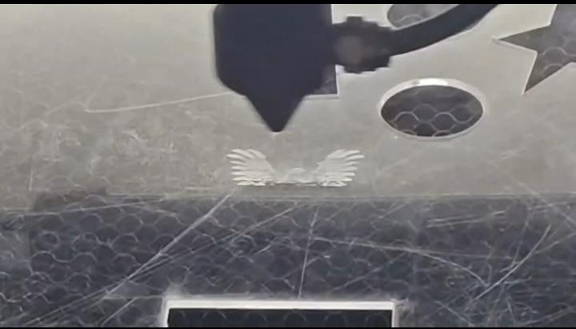
Laser Cutting Parameter Calculator
150W CO₂ Power & Speed Dynamics
Calculate linear energy density and estimated cycle times for Transparent Acrylic.
Final Result
The final physical outcomes on 2.0mm transparent acrylic substrate after the laser cutting and scanning process:

Problems Faced, Solutions & Reflection
I faced challenges in setting the colour for laser scan and laser cut and quite confused about the design output regarding which part will be engraved and cut.
I wasn’t sure about how to change the colour setting of work and operation.
I previewed my design to get a better clarity on which parts will be engraved and cut which helped me to choose the appropriate colours for the operation.
In the end of the laser cutting process the output was in the expected form and design.
Reflection:
"The activity gave me a detailed view about the steps involved in laser cutting that has to be performed with utmost care and responsibility. It all starts from choosing the image, converting it into the desired file format, adjusting the dimensions and geometry, previewing the output and finally operating the laser cutting machine."
"Even though I faced a lot of challenges in the modifying the dimensions of my first design I was able to understand the process clearly which made me to design and work in a much more efficient way for my second image without any flaws. To be honest I felt stuck in the beginning but in the end I learnt and experienced something new and that’s what is required."
Source Files
| File Format | Phoenix ("PRANETHA") | Lion ("UNSTOPPABLE") |
|---|---|---|
| DXF (AutoCAD Drawing Exchange) | ||
| AI (Adobe Illustrator Source) |
What is 3D Printing?
3D printing (Additive Manufacturing) is a manufacturing process that creates a three-dimensional object layer by layer directly from a digital CAD design.
The design is created using 3D modeling software, converted to numerical slices, and sent to the 3D printer. The printer deposits or solidifies material slice by slice until the complete physical geometry is formed.
Stages of 3D Printing
Create the 3D digital model using CAD or sculpt tools.
Convert the model into printable horizontal layers & G-code.
Load filament/resin, calibrate bed leveling & preheat nozzle.
The machine builds the object layer by layer.
Remove tree supports, clean brim, wash/cure, and finish.
Check dimensional tolerance and articulated joint motion.
Types of 3D Printing
1. FDM
Fused Deposition ModelingUses a heated nozzle to melt thermoplastic filament and deposits it layer by layer. Widely used for prototypes, models, and educational projects.
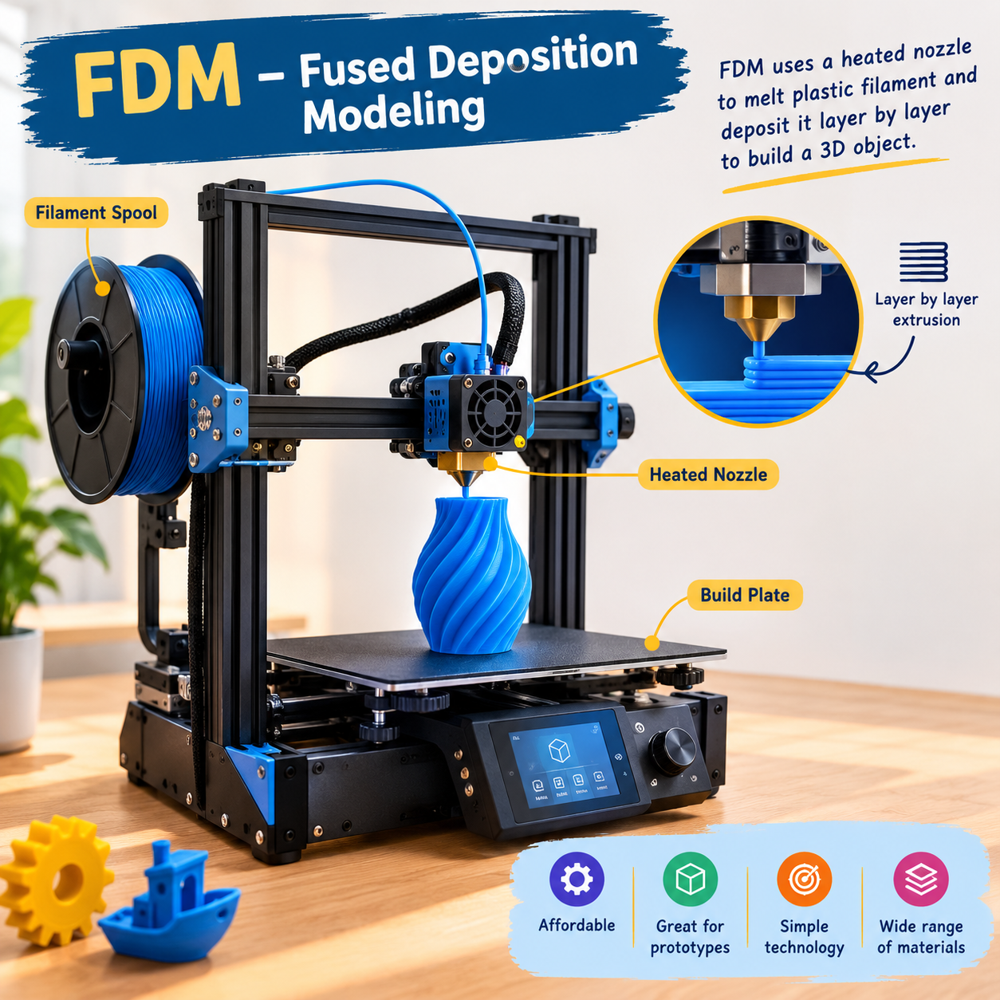
2. SLA
StereolithographyUses a UV laser beam to selectively cure liquid photopolymer resin layer by layer into solid plastic. Produces ultra-high detail and smooth parts.
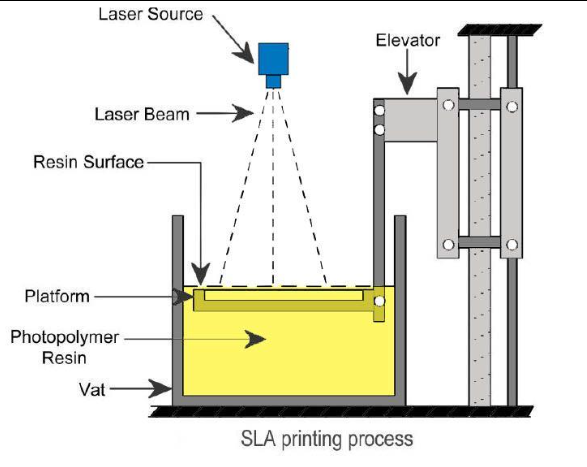
3. DLP
Digital Light ProcessingUses a digital projector screen to cure an entire layer of liquid resin simultaneously. Delivers high resolution and faster print speeds than point-by-point SLA.
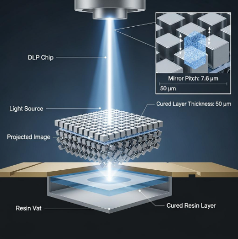
4. SLS
Selective Laser SinteringUses a high-power laser to fuse powdered polymer (e.g. Nylon PA12) layer by layer. Creates strong, functional, and self-supporting complex parts without sacrificial supports.
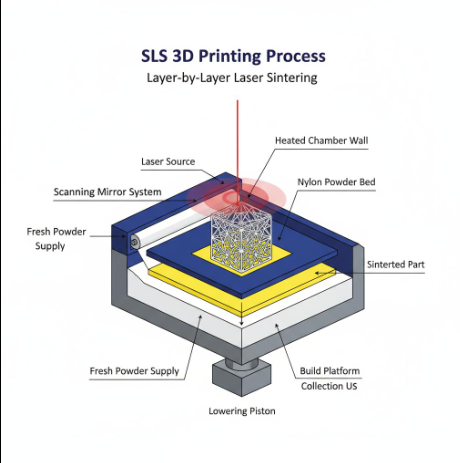
Manufacturing Process of 3D Printing
1. Digital Preparation (CAD & Slicing)
CAD Design: Create the 3D model in specialized design software.
Export & Slicing: Export as an STL/3MF file and slice it into layers to generate machine-readable G-code commands.
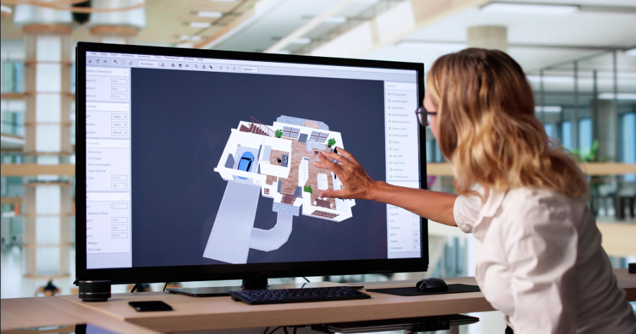
2. Machine Setup
Load Material: Insert thermoplastic filament, liquid photopolymer resin, or metal/polymer powder.
Calibrate Platform: Level the build platform and preheat the print bed and nozzle to target operating temperatures.
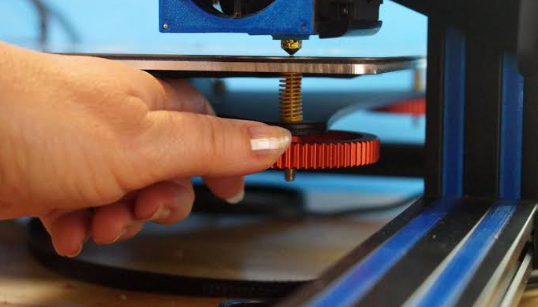
3. Printing (Layer Deposition)
The machine builds the part slice-by-slice through FDM (extrusion), SLA (UV resin curing), SLS (polymer sintering), or SLM (metal melting).
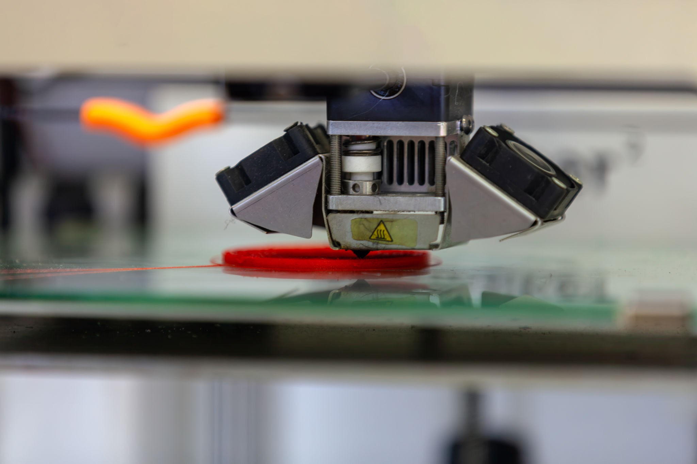
4. Post-Processing
Part & Support Removal: Detach part from build plate; break off or dissolve support geometry.
Clean & Surface Finishing: Wash and UV-cure resin parts; sand, polish, vapor-smooth, or heat-treat for final quality.
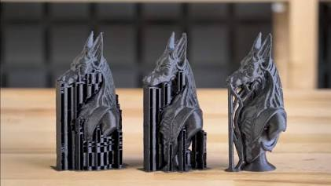
Advantages, Disadvantages & Limitations
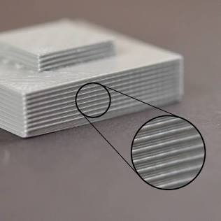
✅ Key Advantages of 3D Printing
- Rapid Prototyping & Speed: Turn digital CAD models into physical parts in hours rather than weeks, accelerating product cycles.
- Design Freedom & Complexity: Print intricate geometries, organic shapes, internal channels, and lattice structures impossible with CNC.
- Zero Tooling (Low Initial Investment): No molds or dies required—extremely cost-effective for single parts and custom runs.
- On-Demand & Customization: Easily personalize each item without extra setup cost (medical implants, dental, consumer products).
- Minimal Material Waste: Additive layer-by-layer deposition uses only the required material, reducing scrap.
- Supply Chain Efficiency: Digital inventory allows models to be stored in the cloud and printed locally on demand.
⚠️ Disadvantages & Limitations
- High Cost at Scale: Inefficient and expensive for mass manufacturing compared to injection molding due to static unit costs.
- Slow Production Speeds: Fabrication takes hours per part, creating bottlenecks for high-volume output.
- Anisotropic Mechanical Weakness: Parts are built layer-by-layer, making them weaker along the vertical Z-axis bond lines.
- Build Size Limitations: Physical chamber volume strictly caps maximum single-part dimensions.
- Extensive Post-Processing: Requires manual support removal, sanding, chemical washing, or UV curing.
- Restricted Material Selection: Fewer choices compared to traditional machining; specialized resins/powders are costly.
Laboratory 3D Printer Details
Make: Bambu Lab | Model: H2S
📍 Location: FORGE HW Junction DFab #2 | Slicer: Bambu Studio
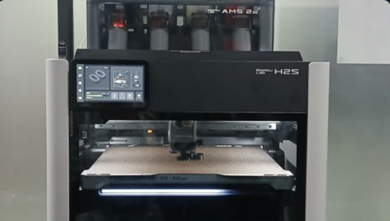
Slicer & Material
| Parameter | Details |
|---|---|
| Slicer / Software | Bambu Studio |
| Printer Profile | Bambu Lab H2S (0.20mm Standard Profile) |
| Nozzle Diameter | 0.4 mm |
| Material | White PLA filament |
| Model Format | STL (Standard Triangle Language) |
| Model Source | Printables Repository |
Printer Limits & Capabilities
The practical laboratory test demonstrated that the Bambu Lab H2S could produce an articulated model with multiple small, connected geometric features. Slicing required careful part orientation, and auto-generated tree supports were enabled in the supplied setup. The 0.4 mm nozzle provided the basis for producing repeated articulated details while maintaining practical print times.
Capabilities & Limitations Demonstrated:
- Capability: Printing complex articulated objects as a unified functional physical prototype.
- Capability: Accurately handling curved and repeated geometric interlocking joints.
- Capability: Utilizing slicer-generated auto tree supports where overhang angles exceed 45°.
- Practical Limitation: Fine articulated features require precise layer height, nozzle calibration, and optimal bed orientation.
- Practical Limitation: Support material adds slight material usage and post-processing manual cleanup.
Why the Object Cannot Be Made Subtractively
- Complex Interlocking Clearances: The articulated model contains organic curved surfaces, internal mechanical clearances, and multiple moving sections that are designed to print pre-assembled in a single run.
- Tool Access Constraints: Conventional subtractive processes (such as 3-axis/5-axis CNC milling or drilling) require cutting tool access. Rotating endmills cannot access enclosed, closely spaced, and hollow interior undercuts.
- Assembly vs Single-Part: Producing this geometry subtractively would require machining dozens of tiny sub-components and manual assembly.
- The Additive Advantage: Additive manufacturing builds geometry slice by slice, effortlessly forming internal moving joints and clearances directly from the digital code.
STL Definition & Triangular Mesh
STL stands for Stereolithography (or Standard Triangle Language). It is the universal file format serving as the bridge between 3D CAD modeling software and 3D printing slicers.
What STL Represents:
An STL file strictly represents the raw surface boundary (outer skin) of a 3D object:
- Geometry Only: Defines where the outer shell exists in 3D Euclidean space.
- No Metadata: Deliberately strips away parametric feature trees, color, texture, material properties, scale units, and internal assembly hierarchies.
Triangular Surface-Mesh (Tessellation):
STL approximates surfaces using interconnected 2D planar triangles (facets). Each facet is mathematically defined by the 3D coordinates (X, Y, Z) of its 3 corner vertices and a unit normal vector pointing outwards to distinguish outside from inside.
- High-Density Mesh: Uses smaller, more numerous triangles for smooth organic curves (larger file size).
- Low-Density Mesh: Uses fewer, larger triangles resulting in visible flat facets (smaller file size).
Selected STL File: Articulated Eagle
An articulated Eagle model was selected from Printables. The digital STL geometry was imported directly into Bambu Studio for layer slicing and build plate orientation:
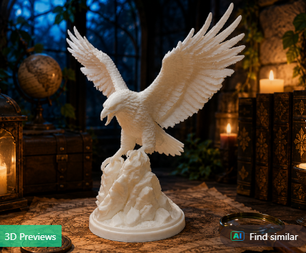
Bambu Studio Slicer Settings
| Slicer Parameter | Calibrated Value | Purpose & Thermal Function |
|---|---|---|
| Nozzle Temperature | 220 °C |
Ensures complete polymer melt flow of White PLA filament. |
| Bed Temperature | 55 °C |
Prevents thermal warping and maintains adhesion to PEI plate. |
| Layer Height | 0.20 mm |
Balances vertical resolution with efficient overall print duration. |
| Infill Percentage | 15% |
Optimal strength-to-weight ratio for articulated prototypes. |
| Infill Pattern | Grid |
Uniform internal support across multidirectional stress planes. |
| Wall / Shell Count | 2 Walls |
Provides outer shell rigidity and clean surface perimeter. |
| Print Speed | Standard Profile |
Calibrated Bambu Lab H2S high-speed kinematic profile. |
| Support Type | Auto Tree Supports |
Minimal contact footprint for easy manual detachment from joints. |
| Bed Adhesion | Outer Brim (5 mm) |
Enhances contact area on small articulated wing tips. |
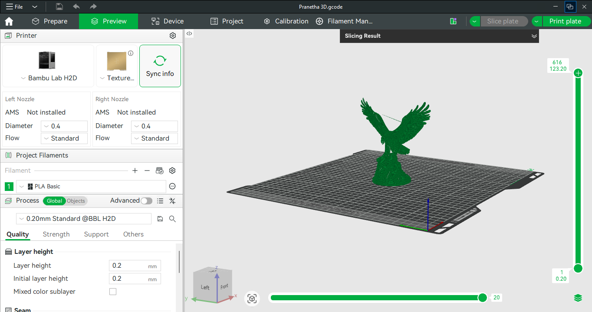
Slicer Estimates vs. Actual Execution
| Measurement Metric | Estimated / Recorded Value | Actual Measured Value | Engineering Observation |
|---|---|---|---|
| Print Time | 1 h 50 min |
Logged from printer screen/app | Assesses slicer prediction against real-world execution (including bed heating and auto-leveling routines). |
| Total Material Mass | 41.38 g |
6.05 g |
Final printed mass was 1.22 g (~4.83%) lighter than software projection. |
| Model Material | 36.54 g |
4.00 g (breakdown) |
Software prediction for the core articulated model. |
| Support Material | 4.84 g |
0.45 g (breakdown) |
Lightweight tree support structures easily snapped off. |
Final Result: Articulated Eagle
The final component is a fully articulated eagle fabricated from white PLA filament. It showcases additive manufacturing's unique ability to produce complex, interconnected joints in a single continuous print:
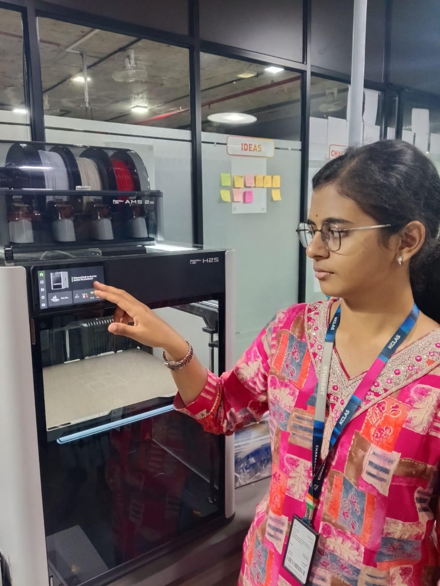
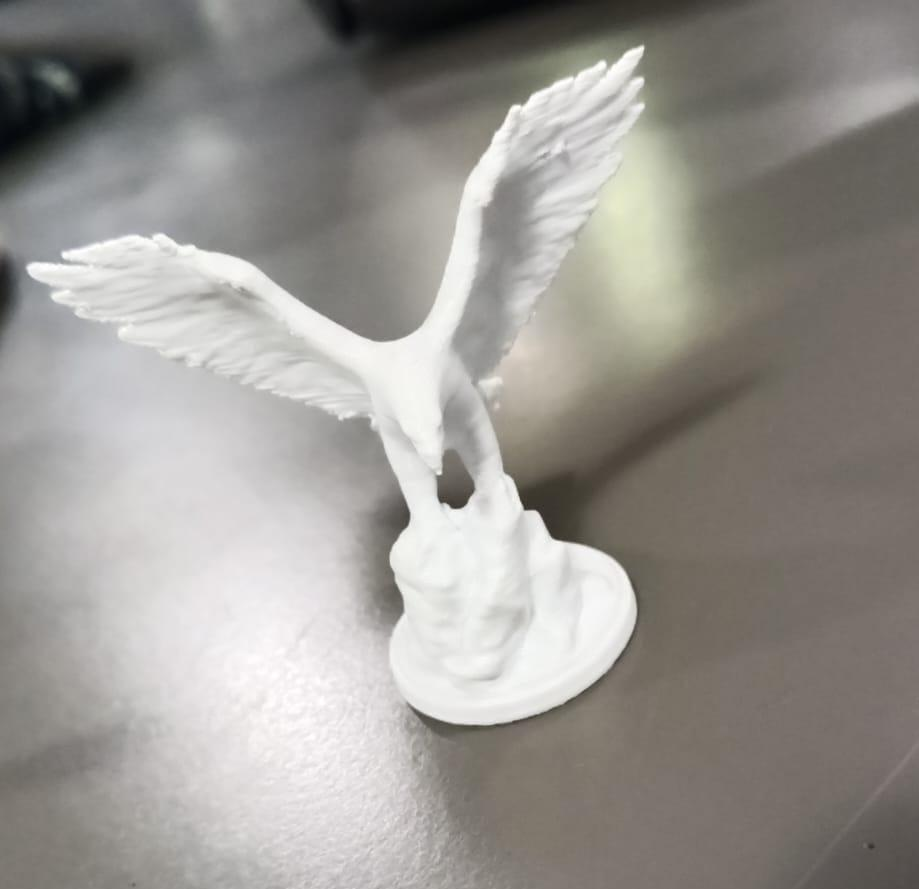
Source Files & Slicer Profile
| Asset / File Type | Download Link | Description |
|---|---|---|
| STL 3D Model | Raw triangular surface mesh geometry. | |
| G-Code / 3MF Profile | Pre-sliced G-code with 0.20mm layers & tree supports. |